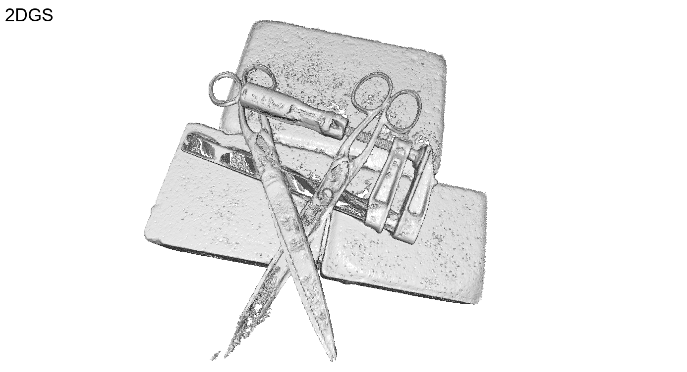

3DRealCar


3D car modeling is crucial for applications in au- tonomous driving systems, virtual and augmented reality, and gaming. However, due to the distinctive properties of cars, such as highly reflective and transparent surface ma- terials, existing methods often face challenges in accurately reconstructing 3D models. To address these limitations, we propose Car-GS, a novel approach designed to mitigate the effects of specular highlights and the coupling of RGB and geometry in 3D geometric and shading reconstruc- tion (3DGS). Our method incorporates three key innova- tions: First, we introduce view-dependent Gaussian prim- itives to effectively model surface reflections. Second, we identify the limitations of using a shared opacity parame- ter for both image rendering and geometric attributes when modeling transparent objects. To overcome this, we assign a learnable geometry-specific opacity to each 2D Gaus- sian primitive, dedicated solely to rendering depth and nor- mals. Third, we observe that reconstruction errors are most prominent when the camera view is nearly orthogonal to glass surfaces. To address this issue, we develop a quality- aware supervision module that adaptively leverages normal priors from a pre-trained large-scale normal model. Exper- imental results demonstrate that Car-GS achieves precise reconstruction of car surfaces and significantly outperforms prior methods.
We initialize View-Dependent Gaussians (VDG) and View-Shared Gaussians (VSG) using monocular depth estimates aligned with Structure-from-Motion (SFM). VDG models view-specific attributes, while VSG captures shared information. During rendering, a learnable hybrid opacity is applied to RGB images and depth/normal maps. Additionally, a quality-aware supervision module leverages pretrained normal priors to regulate rendered normals, especially in reflective regions.


@article{chen2024pgsr,
title={PGSR: Planar-based Gaussian Splatting for Efficient and High-Fidelity Surface Reconstruction},
author={Danpeng Chen and Hai Li and Weicai Ye and Yifan Wang and Weijian Xie and Shangjin Zhai and Nan Wang and Haomin Liu and Hujun Bao and Guofeng Zhang},
booktitle={arxiv preprint arxiv:2406.06521},
year={2024}
}
```